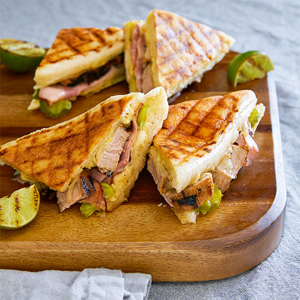

A Cuban or a Cubano is a grilled, pressed sandwich made with Cuban bread that is filled with ham, roasted pork, Swiss cheese, pickles, and mustard. It was originally invented by Cuban immigrants in Florida, who wanted to make their own variation on a classic grilled ham and cheese sandwich.
Meal prep time : 25 minutes
Servings : 2